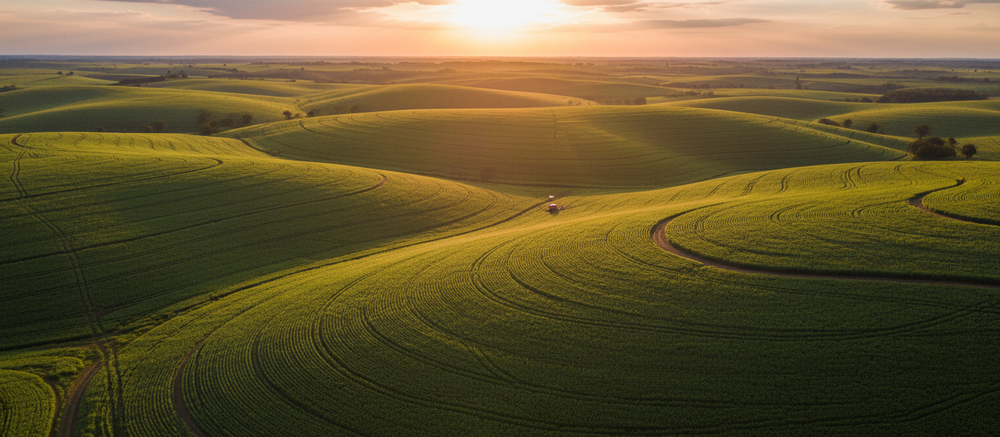
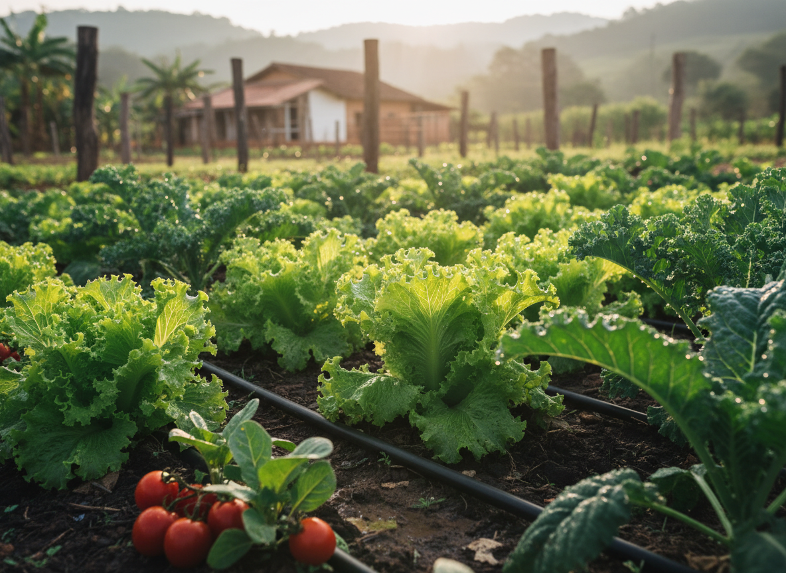
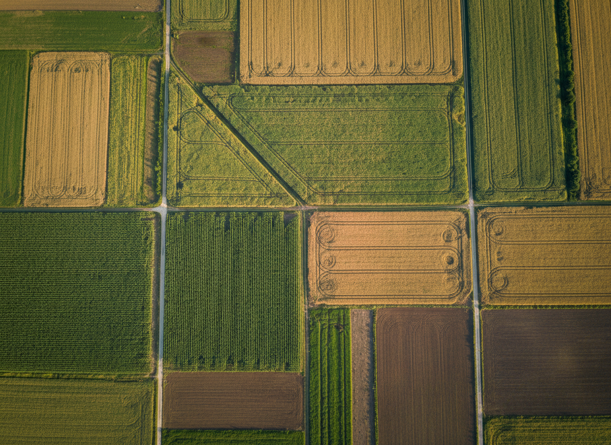
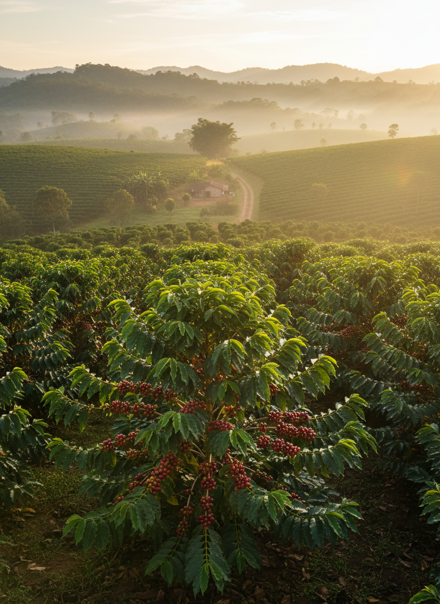
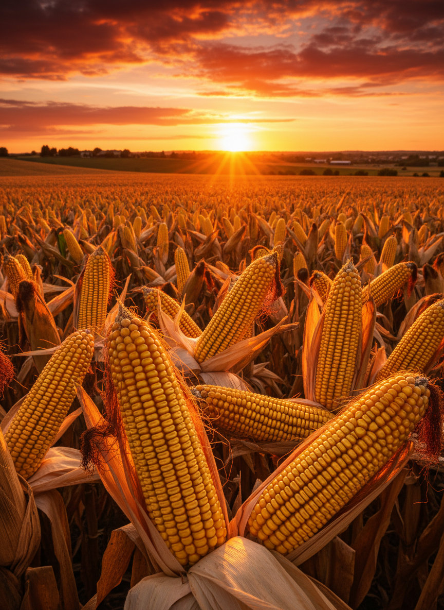
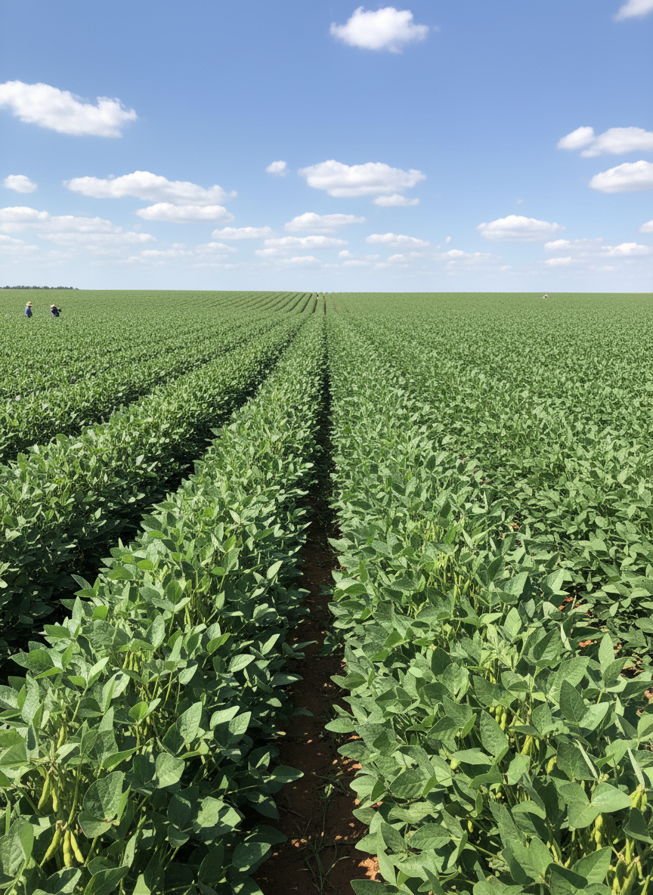
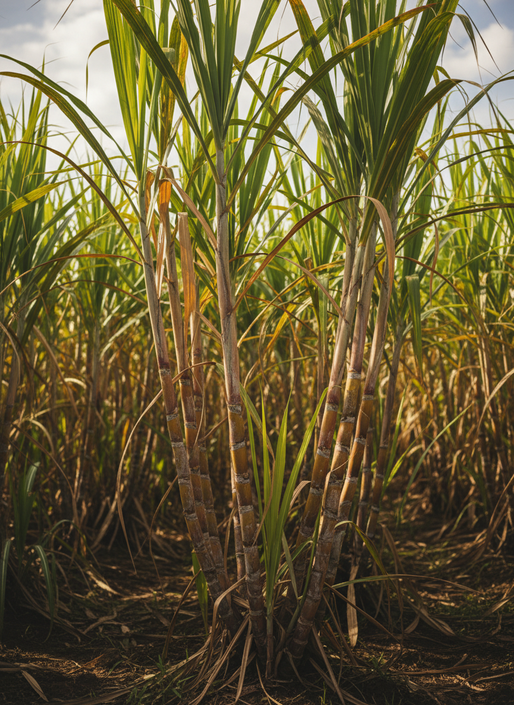
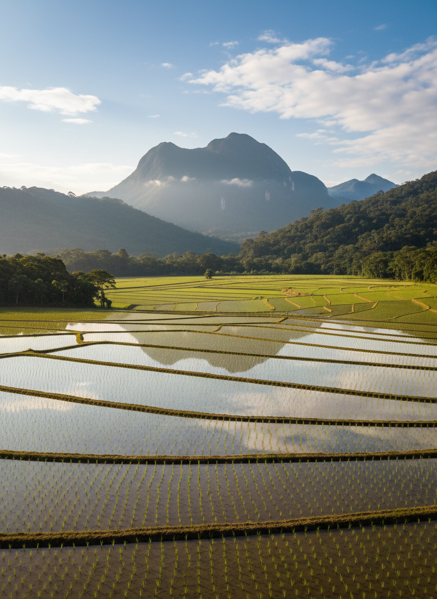
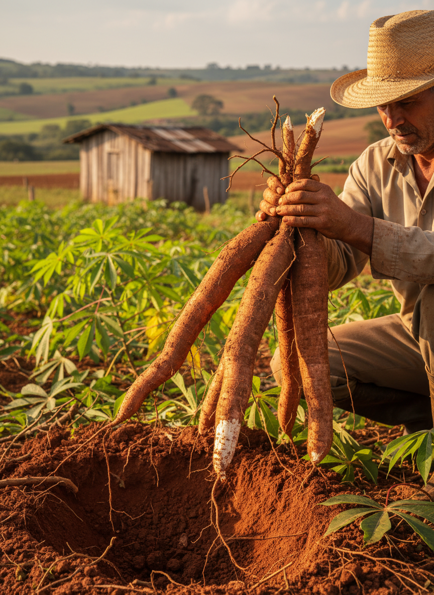
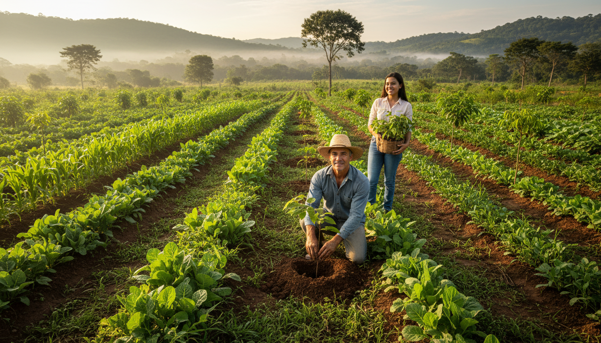

Ferramentas inteligentes para o produtor rural brasileiro: previsão do tempo, gestão de água, rotação de culturas e muito mais — tudo em um só lugar.
Clima em
Tempo Real
Economia
de Água
Culturas
Inteligentes
Consulte as condições climáticas da sua região para planejar melhor o plantio e a colheita.
Selecione uma região:
Calcule a quantidade ideal de água para sua lavoura e reduza o desperdício. Uma irrigação eficiente pode economizar até 40% dos recursos hídricos.

Economia com gotejamento
Irrigação consciente
Estime sua necessidade hídrica
A rotação de culturas é essencial para manter a saúde do solo, controlar pragas e garantir produtividade a longo prazo.

Alterne famílias botânicas diferentes a cada safra
Inclua uma leguminosa para fixar nitrogênio
Use plantas de cobertura na entressafra
Selecione uma cultura para ver
a sugestão de rotação
Conheça as principais culturas brasileiras, seus requisitos climáticos e as melhores épocas para plantio em cada região.







Práticas sustentáveis que preservam o meio ambiente e aumentam a produtividade da sua propriedade.
Mantenha a vegetação nativa nas margens dos rios conforme o Código Florestal.
Transforme resíduos orgânicos em adubo natural, reduzindo custos e melhorando o solo.
Instale cisternas para coletar água da chuva e usar na irrigação e dessedentação animal.
Utilize predadores naturais para controlar pragas, reduzindo o uso de agrotóxicos.
Plante sem revolver o solo, mantendo a cobertura vegetal e reduzindo a erosão.
Construa terraços para conter a erosão e preservar a fertilidade do solo.
Aplique fertilizantes e defensivos na dose correta com análise do solo.
Invista em energia solar ou biodigestores para reduzir custos e pegada de carbono.
Tem dúvidas, sugestões ou quer participar do Programa Agrinho 2026? Entre em contato com nossa equipe.
contato@agrosmart.edu.br
Respondemos em até 48 horas(41) 3200-0000
Segunda a sexta, 8h às 17hPrograma Agrinho — SENAR-PR
Curitiba, Paraná, BrasilO AgroSmart é uma iniciativa do Programa Agrinho 2026, desenvolvido para levar tecnologia e conhecimento ao produtor rural brasileiro, promovendo sustentabilidade e eficiência no campo.